RCU（Read-Copy Update）的意思是读-复制更新，它是根据原理命名的。写者修改对向的过程是：首先复制生成一个副本，然后更新这个副本，最后使用新的对象替换旧的对象。在写者执行复制更新的时候读者可以读数据。
写者删除对象，必须等到所有访问被删除对象的读者访问计数，才能执行销毁操作。RCU的关键计数是怎么判断所有读者已经完成访问。等待所有读者访问结束的时候称为宽限期（grace period）。
RCU的优点是读者没有任何同步开销：不需要获取任何锁，不需要执行原子指令，（在除了阿尔法以外的处理器上）不需要执行内存屏障。但是写者的同步开销比较大，写者需要延迟对象的释放，复制被修改的对象，写者之间必须使用锁互斥。
RCU的第一个版本称为景点的RCU，在内核版本2.5.43中引入，目前内核支持3种RCU：
1）不可抢占RCU（RCU-sched）：不允许进程在读端临界区被其他进程抢占。最初的经典的RCU是不可抢占RCU，后来引入了可抢占RCU，所以内核版本2..6.12为不可抢占RCU设计了一套专用编程接口。
2）加速版不可抢占RCU（RCU-bh， bh（bootom half）的缩写，下半部），在内核班恩2.6.9中引入，是针对不可抢占RCU的改进，在软中断很多的情况下可以缩短宽限期。
内核的网络栈在软中断里面处理报文，如果攻击者疯狂的发送报文攻击设备，导致被攻击设备的处理器大部分时间执行软中断，宽限期会变得很长，大量延后执行的销毁操作没有被执行，可能导致内存耗尽。
为了应对分布式拒绝服务攻击，RCU-bh把执行完软中断看做处理器退出读端临界区的标志，缩短宽限期。
3）可抢占RCU（RCU-preempt），也称为实时RCU，在内核版本2.6.26中引入。可抢占RCU允许进程在独断临街去被其他进程抢占，编译内核时需要开启配置宏CONFIG_PREEMPT_RCU。
RCU根据数据结构可以分为两种：
1）数据RCU（tree RCU）：也称为基于树的分层RCU（Tree-based hierarchical RCU），为拥有几百个或几千个处理器的大型系统设计。配置hogCONFIG_TREE_RCU。
2）微型RCU（tiny RCU）：为不需要实时影响的单处理器系统设计。配置宏CONfiG_TINY_RCU。
如果不关系使用的RCU是不可抢占RCU还是可抢占RCU，应该使用进店RCU的编程接口。最初的经典RCU是不可抢占RCU，后来实现了可抢占RCU，经典RCU的意思是发生了变化：如果内核编译了可抢占RCU，那么经典RCU的编程接口被实现为可抢占RCU，否则被实现为不可抢占RCU。
读者使用函数rcu+read_lock()标记进入独断临界区，使用函数rcu_read_unlock()标记退出独断临界区。独断临界区可以嵌套。
在读端临界区里面应该使用宏rcu_dereference(p)访问指针，这个宏封装了数据依赖屏障，即只有阿尔法处理器需要的读内存屏障。
写者可以使用下面4个函数。
1）使用函数synchronize_rcu()等待宽限期结束，即所有读者退出独断临界区，然后写者执行下一步操作。这个函数可能睡眠。
2）使用函数synchronize_rcu_expedited()等待宽限期结束。和函数synchronize_rcu()的区别是：该函数会向其他处理器发送处理器间中断（Inter_Processor Interrupt IPI）请求，强制宽限期快速结束。我们把强制快速结束的款项称为加速宽限期（expedited grace period），把没有强制快速结束的宽限期称为真诚噶好难过限期（normal grace period）。
3）使用函数call_rcu()注册延后执行的回调函数，把回调函数添加到RCU回调函数链表中，立即返回，不会这色。函数原型如下：
x1void call_rcu(struct rcu_head *head, rcu_callback_t func);2
3struct callback_head {4 struct callback_head *next;5 void (*func)(struct callback_head *head);6} __atrtreibute__((aligned(sizeof(void *))));7
8typedef void (*rcu_callback_t) (struct rcu_head *head);4）使用函数rcu_barrier()等待使用call_rcu注册的所有回调函数执行完，这个函数可能睡眠。
现在举例说明使用方法，假设链表节点和头节点如下：
81typedef struct {2 struct list_head link;3 struct rcu_head rcu;4 int key;5 int val;6} test_entry;7
8struct list_head test_head;成员”struct rcu_head run“：调用函数call_run把回调函数添加到RCU回调函数链表的时候需要使用。
读者访问链表的方法如下：
171int test_read(int key, *val_ptr)2{3 test_entry *entry;4 int found = 0;5 6 rcu_read_lock();7 list_for_each_entry_rcu(entry, &test_head, link){8 if(entry->key =key){9 *val_ptr = entry->val;10 found = 1;11 break;12 }13 }14 rcu_read_unlock();15 16 return found;17}如果只有一个写者，写者不需要使用锁，添加、更新和删除3种操作的视线方法如下：
1）写者添加一个节点到链表尾部。
41void test_add_node(test_entry *entry)2{3 list_add_tail_rcu(&entry->link, &test_head);4}2）写者更新一个节点。
更新的过程是：首先把旧节点复制更新，然后使用新节点替换旧节点，最后使用函数call_rcu注册回调函数，延后释放旧节点。
321int test_update_node(int key, it new_val)2{3 test_entry *entry, *new_entry;4 int ret;5 6 ret = -ENOENT;7 list_for_each_entry(entry &test_head, link){8 if(entry->key == key){9 new_entry = kmalloc(sizeof(test_entry), GFP_ATOMIC);10 if(new_entry == NULL){11 ret = -ENOMEM;12 break;13 }14 15 *new_entry = *entry;16 new_entry -> val = new_val;17 list+replace_rcu(&entry->list, &new_entry->list);18 call_rcu(&entry->rcu, test_free_node);19 ret = 0;20 break;21 }22 }23 24 return ret;25}26
27
28static void test_free_node(struct rcu_head *head){29 test_entry *entry = container_of(head, test_entry, rcu);30 31 kfree(entry);32}3）写者删除一个节点的第一种实现方法是：首先把节点从链表中删除，然后使用函数call_rcu注册回调函数，延后释放节点。
211int test_del_node(int key)2{3 test_entry *entry;4 int found = 0;5 6 list_for_ezch_entry(entry, &test_head, link){7 if(entry-> key == key){8 list_del_rcu(&entry->link);9 call_rcu(&entry->rcu, test_free_node);10 fount = 1;11 break;12 }13 }14 15 return found;16}17
18static void test_free_node(struct rcu_head *head){19 test_entry *entry = container_of(head, test_entry, rcu);20 kfree(entry);21}4）写者删除一个节点的第二种实现方法是：首先把节点从链表中删除，然后使用函数synchronize_rcu()等待宽限期结束，最后释放节点。
181int test_del_node(int key)2{3 test_entry *entry;4 int fount = 0;5 6 list_for_each_entry(entry, &test_head, link){7 if(entry->key == key){8 list_del_rcu(&entry->link);9 synchronize_rcu();10 11 kfree(entry);12 found = 1;13 break;14 }15 }16 17 return found;18}如果有多个写者，那么写者之间必须使用锁互斥，添加、删除和更新3种操作的实现方法如下：
写者添加一个节点到链表尾部。假设使用自旋锁“test_lock”保护链表。
61void test_add_node(test_entry *entry)2{3 spin_lock(&test_lock);4 list_add_tail_rcu(&entry->link, &test_head);5 spin_unlock(&test_lock);6}写者更新一个节点：
341int test_update_node(int key, int new_val)2{3 test_entry *entry , *new_entry;4 int ret ; 5 ret = - ENOENT;6 7 spin_lock(&test_lock);8 list_for_each_entry(entry, &test_head, link){9 if(entry->key == key){10 new_entry = kmalloc(sizeof(test_entry), GFP_ATOMMIC);11 if(new_entry == NULL){12 ret = -ENOMEM;13 break;14 }15 16 *new_entry = *entry;17 new_entry -> val = new_val;18 list_replace_rcu(&entry->list &new_entry->list);19 call_rcu(&entry->rcu, test_free_node);20 ret = 0;21 break;22 }23 }24 25 spin_unlock(&test_lock);26 27 return ret;28}29
30static void test_free_node(struct rcu_head *head)31{32 test_entry *entry = container_of(head, test_entry, rcu);33 kfree(entry);34}写者删除一个节点：
241int test_del_node(int key)2{3 test_entry *entry;4 int found = 0;5 6 spin_lock(&test->link);7 list_for_each_entry(entry, &test_head, link){8 if(entry -> key == key){9 list_del_rcu(&entry->link);10 call_rcu(&entry->rcu, test_free_node);11 found = 1;12 break;13 }14 }15 16 spin_unlock(&test_lock);17 return foundl;18}19
20static void test_free_node(struct rcu_head *head)21{22 test_entry *entry = container_of(head, test_entry, rcu);23 kfree(entry);24}如果我们的需求是“不管内核是否编译了可抢占RCU，都要使用不可抢占RCU”，那么应该使用不可抢占RCU的专用编程接口。
读者私用函数rcu_read_lock_sched()标记进入读端临界区，使用函数rcu_read_unlock_sched()标记退出读端临界区。读端临界区可以嵌套。
在读端临界区里面应该使用宏rcu_dereference_sched(p)访问指针，这个宏封装el数据依赖屏障，即只有阿尔法处理器需要的读内存屏障。
写者可以使用下面4个函数：
1）使用函数synchronize_sched_expedited()等待宽限期结束。和函数synchronize_sched()的区别是：该函数会向其他处理器发送处理器间中断请求，强制宽限期快速结束。
2）使用函数synchronize_sched_expedited()等待宽限期结束。和函数synchronize_sched()的区别是：该函数会向其他处理器发送处理器间中断氢气，强制宽限期快速结束。
3）使用函数call_rcu_sched()注册延迟执行的回调函数，把回调函数添加到RCU回调函数链表中，立即返回，不会阻塞。
4）使用函数rcu_barrier_sched()等待使用call_rcu_sched注册的所有回调函数执行完。这个函数可能睡眠。
加速版不可抢占RCU在软中断很多的情况相爱可以缩短宽限期。
读者使用函数rcu_read_lock_bh()标记进入读端临界区，使用函数rcu_read_unlock_bh()标记退出读端临界区。读端临界区可以嵌套。
在读端临界区里面应该使用宏rcu_dereference_bh(p)访问指针，这个宏封装了数据依赖屏障，即只有阿尔法处理器需要的读端内存屏障。
写者可以使用下面4个函数：
1）使用函数synchronize_rcu_bh()等待宽限期结束，即所有读者退出独断line汲取，然后写者执行下一步操作。这个函数可能睡眠。
2）使用函数synchronize_rcu_bh_expedited()等待宽限期结束。和函数synchronize_rcu_bh()的区别是：该函数会向其他处理器发送处理器中断请求，强制宽限期快速结束。
3）使用函数call_rcu_bh注册延后执行的回调函数，把回调函数添加到RCU回调函数脸小中，立即返回，不会阻塞。
4）使用函数rcu_barrier_bh()等待使用call_rcu_bh注册的所有回调函数执行完。这个函数可能睡眠。
RCU最常见的使用场合是保护大多数时候读的双向链表。内核实现了链表操作的RCU版本，这些操作封装了内存屏障。
内核实现了4种双向链表：
1）链表“list_head”。
2）链表“hlist”：和链表“list_head”相比，优势是头节点只有一个指针，节省内存。
3）链表“hlist_nulls”。hlist_nulls是hlist的变体，区别是：链表hlist的结束符号是一个空指针；链表hlist_nulls的结束符号是“（1UL((()long)value) << 1）”，最低位为1，value是嵌入的值，比如散列桶的索引。
4）链表“hlist_bl”。hlist_bl是hlist的变体，链表头节点的最低位作为基于为的自旋锁保护链表。
链表“list_head”常用的操作如下：
1）list_for_each_entr_rcu(post, head, member)：遍历链表，这个宏封装了只有阿尔法处理器需要的数据依赖屏障。
2）void list_add_rcu(struct list_head *new, struct list_head *head)：把头节点添加到链表尾部。
3）void list_add_tail_rcu(struct list_head *new, struct list_head *head)：把节点添加到链表尾部。
4）void list_del_rcp(struct list_head *entry)：把节点从链表中删除。
5）void list_replace_rcu(struct list_head *old, struct list_head *new)：用新节点替换旧节点。
链表“hlist”常用的操作如下：
1）hlist_for_each_rcu(pos,head, member)：遍历链表。
2）void hlist_add_head_rcu(struct hlist_node *n, struct hlist_head *h)：把节点添加到链表首部。
3）void hlist_add_tail_rcu(struct hlist_node *n, struct hlist_head *h)：把节点添加到链表尾部。
4）void hlist_del_rcu(struct hlist_node *n)：把节点从链表中删除。
5）void hlist_replace_rcu(struct hlist_node *old, struct hlist_node *new)：用新节点替换旧节点。
链表“hlist_nulls”常用的操作如下：
1）hlist_nulls_for_each_entry_rcu(tpos, pos, head, member)：遍历链表。
2）void hlist_nulls_add_head_rcu(struct hlist_nulls_node *n, struct hlist_nulls_head *h)：把节点添加到链表首部。
3）void hlist_nulls_add_tail_rcu(struct hlist_node *node, struct hlist_nulls_head *h)：把节点添加到链表尾部。
4）void hlist_nulls_del_rcu(struct hlist_nulls_node *n)：把节点从链表中删除。
链表”hlist_bl“常用的操作如下：
1）hlist_bl_for_each_entry_rcu(trops, head, member)：遍历链表。
2）void hlist_bl_add_head_rcu(struct hlist_bl_node *n, struct hlist_bl_head *h)：把节点添加到链表的首部。
3）void hlist_bl_del_rcu(struct hlist_bl_node *n)：把节点从链表中删除。
创建slab缓存的时候，可以使用标志SLAB_TYPESAFE_BY_RCU（旧的名称是SLAB_DESTORY_BY_RCU），延迟释放slab页到RCU宽限期结束，例如：
41struct kmem_cache *anno_vma_cachep;2
3anon_vma_cachep = kmem_cache_create("anon_vma", sizeof(struct anno_vma), 4 0, SLAB_TYPESAFE_BY_RCU | SLAB_PANIC | SLAB_ACCOUT, anon_vma_ctor);注意：标志SLAB_TYPESAFE_BY_RCU只会延迟释放slab页到RCU宽限期结束，但是不会延迟对象的释放。当调用函数kemem_cache_free()释放对象时，对象的内存被释放了，可能立即被分配给另一个对象。如果使用散列表，新的对象可能加入不同的散列通。所以查找对象的时候一定要小心。
针对使用函数kmalloc()从通用slab缓存分配的对象，提供了函数“kfree_rcu(ptr,rcu_head)”来延迟释放对象到RCU宽限期结束，参数rcu_head是指针ptr指向的结构体里面类型为“struct rcu_head”的成员的名称例如：
121typedef struct {2 struct list_head link;3 struct rcu_head rcu;4 int key;5 int val;6} test_entry;7
8test_entry *p;9
10p = kmalloc(sizeof(test_entry), GFP_KENEL);11...12kfree_rcu(p, rcu);举例子，假设对象从设置了标志SLAB_TYPESAFE_BY_RCU的slab缓存分配内存，对象加入散列表，散列表如下：
11struct hlist_nulls_head table[TABLE_SIZE];初始化散列桶的时候，把散列桶的索引嵌入到链表结束符号中，代码如下：
41for (i = 0; i < TABLE_SIZE; i++)2{3 INIT_HLIST_NULLS_HEAD(&table[i], i);4}查找对象的算法如下：
291 head = &table[slot]2 rcu_read_lock();3begin:4 hlist_nulls_for_each_entry_rcu(obj, node, head, hash_node){5 if(obj->key == key){6 // 找到对象以后，如果引用计数不是0，把引用计数加1，如果引用计数是0，表示对象已经被释放；7 // 应该在散列通中重新查找对象8 if(!atomic_inc_not_zero(obj->refcnt)){9 goto begin;10 }11 12 // 把引用计数加1以后，需要重新比较关键字，如果关键字不同，说明对象的内存被释放以后立即被分配给新的对象13 // 应该在散列桶中重新查找对象14 if(obj->key != key){15 put_ref(obj);16 goto begin;17 }18 goto out;19 }20 }21
22 // 如果遍历完一个散列桶，那么需要比较三列桶结束符号中嵌入的散列索引。如果不同，说明对象的内存被释放23 // 以后立即分配给新的对象，新的·对象的三列支部不同，加入了不同的散列通，需要在散列桶中重新查找对象24 if(get_nulls_value(node) != slot){25 goto begin;26 }27 obj = NULL;28out:29 rcu_read_unlock();插入对象的算法如下：
111obj = kmem_cache_alloc(cachep);2if(obj == NULL){3 return -ENOMEM;4}5
6obj-> key = key;7atomic_set(&obj -> refcnt, 1);8
9lock_chain();10hlist_nulls_add_rcu(&obj->hash_node, &table[slot]);11unlock_chain();删除对象的算法如下：
81if(atomic_dec_and_test(obj->refcnt)){2 lock_chain();3 hlist_nulls_del_rcu(&obj->hash_node);4 // 通常是spin_unlock()5 unlock_chain();6 7 kmem_cache_free(cachep, obj);8}首先介绍RCU术语：
1）读端临界区（Read)Side Citical Section）：读者访问RCU保护对象的代码区域。
2）静止状态（quiescent state）：处理器的执行状态，处理器没有读RCU保护的对象，也可以理解成读者静止，没有访问临界区。
3）候选静态状态（Cadiadate Quiescet State）：读端临界区以外的所有点都选静止状态。
4）可以观察的静止装填（Observed Quiescent State）：一部分候选静止状态可以很容易观察到，因为他们和内核的某个时间关联，通过内核的时间可以观察到。把这些容易观察到的静止状态称为可被观察的静止状态。内核的RCU使用的静止桩体是可被观察的静止状态，不可抢占RCU通过事件“进程调度器调度进程”观察到静止状态，加速版不可抢占RCU通过时间“执行完软中断”观察到静止状态。
5）宽限期（grace period）：等待所有处理器上的读者退出临界区的时间称为宽限期。如果所有处理器都至少经历了一个静止状态，那么当前宽限器结束，新的宽限期开始。当钱宽限期结束的时候，写者在当前宽限期及以前注册的销毁对象的回调函数就可以安全的执行。
宽限器分为正常宽限期（normal grace period）和加速宽限期（expedited grace period）。调用函数synchronize_rcu_expedited()等待宽限期结束的时候，会项其他处理器发送处理器中断（Inter-Processor Interrupt IPI）请求，强制产生禁止状态，使宽限期快速结束，我们把强制快速结束的宽限期称为加速宽限期。
RCU需要使用位图记录哪些处理器经历了一个静止状态。在宽限期开始的时候，在位图中为所有处理器设置对应的位，如果一个处理器经历了一个静止状态，就把自己的为从位图中清除，处理器秀爱位图的是偶必须使用自旋锁保护。如果处理器很对，对自旋锁的竞争很激烈，会导致系统性能很差，。
为了解决性能问题，基于数的分层RCU采用了类似淘汰赛的原理：把处理器分组，当一个处理器惊了以为静止状态时，把自己的为从分组的位图中清除，只需要金正分组的自旋锁，当分组中的最后一个处理器经历了一个静止状态时，代表分组从上一层分组的位图中清除位，竞争上一层分组的自旋锁。
RCU使用数据结构rcu_state描述RCU的全局状态，使用数据类型rcu_node描述一个处理器分组的RCU状态，使用数据类型rcu_data描述一个处理器的RCU状态，每个处理器对象一个rcu_data实例。
如下图所示，RCU分层树节点的类型是rcu_node，成员parent指向上一层rcu_node实例，每个处理器的rcu_data实例的成员mynode指向叶子节点。
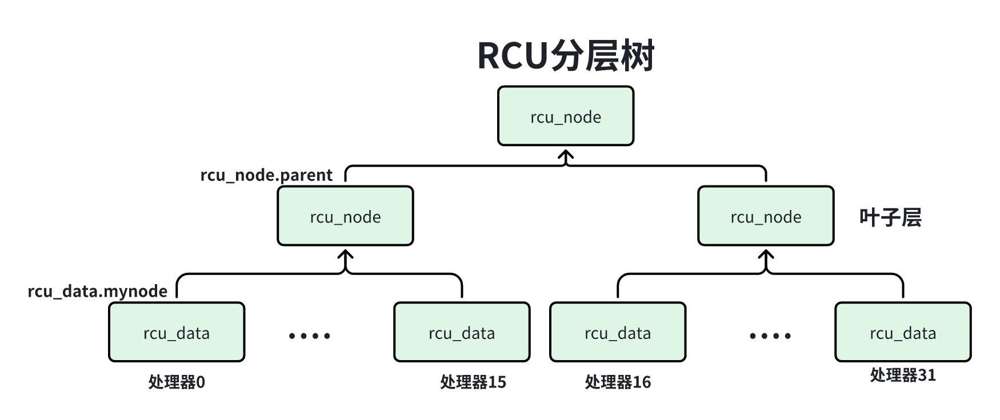
配置宏CONFIG_RCU_FANOUT用来配置中间节点的扇出（fanout），即一个中间节点可以拥有的字节点的最大数量，64位内核的默认至少是64。
配置宏CONFIG_RCU_FANOUT_LEAF用来配置叶子节点的扇出，即叶子节点可以拥有的rcu_data实例的最大数量，默认值是16。
数据类型rcu_state描述RCU的全局状态，主要成员如下：
351// 位置：kernel/rcu/tree.h2
3struct rcu_state {4 // 定义了所有树节点5 struct rcu_node node[NUM_RCU_NODES]; 6 // 保存每个层次的第一个rcu_node实例7 struct rcu_node *level[RCU_NUM_LVLS + 1];8 9 // 每个处理器的第一个rcu_node实例10 struct rcu_data __percpu *rda;11 // 执行特定RCU类型的call_run()函数：不可抢占RCU的成员call是函数call_rcu_sched，12 // 加速版不可抢占RCU的成员call是函数call+rcu_bh。13 call_rcu_func_t call; 14 // 处理器数量15 int ncpus; 16 ...17 18 // 是当前宽限期的编号19 unsigned long gpnum; 20 // 是上一个结束的宽限期的编号21 unsigned long completed; 22 // 宽限期县城23 struct task_struct *gp_kthread; 24 // 宽限期等待队列25 struct swait_queue_head gp_wq;26 // 宽限期线程传递命令27 short gp_flags; 28 // 宽限期线程的睡眠状态29 short gp_state; 30 31 ...32 // 用来把不同RCU类型的rcu_state实例添加到链表rcu_struct_flavors中33 struct list_head flavors;34
35};内核为每种RCU定义类一个rcu_state实例。
1）不可抢占RCU的rcu_state实例是rcu_sched_state。
2）加速版不可抢占RCU的rcu_state实例是rcu_bh_state。
3）可抢占RCU的rcu_state实例是rcu_preempt_state。
4）经典RCU的rcu_state实例的是全局变量rcu_state_p指向的rcu_state实例：如果内核编译了可抢占RCU，rcu_state_p指向可抢占RCU的rcu_state实例，否则指向不可抢占RCU的rcu_state实例。
代码：
301// 位置：kernel/rcu/tree.c2
3RCU_STATE_INITIALIZER(rcu_sched, 's', call_rcu_sched);4// 展开宏是5static DEFINE_PER_CPU_SHARED_ALIGNED(struct rcu_data, rcu_sched_data);6struct rcu_state rcu_sched_state = {};7
8RCU_STATE_INITIALIZER(rcu_bh, 'b', call_rcu_bh);9// 展开宏是10static DEFINE_PER_CPU_SHARED_ALIGNED(struct rcu_data, rcu_bh_data);11struct rcu_state rcu_bh_state = {12 ...13};14
15//位置：kernel/rcu/tree_plugin.h17
19RCU_STATE_INITALIZER(rcu_preempt, 'p', call_rcu);20// 展开宏是21static DEFINE_PER_CPU_SHARED_ALIGNED(struct rcu_data, rcu_preemot_data);22struct rcu_state_premmpt_state = {23 ...24};25static struct rcu_state *const rcu_state_p = &rcu_preempt_state;26static struct rcu_data __percpu *const rcu_data_p = &rcu_preempt_data;27
28 static struct rcu_state *const rcu_state_p = &rcu_sched_state;30数据类型rcu_node描述已给处理器分区的RCU状态，主要成员如下：
401// 位置：kernel/rcu/tree.h2
3struct rcu_node {4 5 // 保护节点的自旋锁6 raw_spinlock_t __private lock; 7 // 本届点的当前宽限期编号8 unsigned long gpnum; 9 // 本届电商一个阶数的宽限期编号10 unsigned long completed; 11 // 静止状态位图，用来记录哪些成员经历了正常宽限期的静止状态。如果某个位为1，表示对应的成员没有名利静止状态12 unsigned long qsmask;13 // 每个正常宽限期开始的时候静止状态位图的初始值14 unsigned long qsmaskinit;15 // 下一个正常宽限期开始的时候静止状态位图的初始值，和处理器热插拔有关16 unsigned long qsmaskinitnext;17 // 静止状态位图，用来记录哪些成员经历了加速宽限期的静止状态18 unsigned long expmask; 19 // 每个加速宽限期开始的时候静止状态位图的初始值20 unsigned long expmaskinit;21 // 下一个加速宽限期开始的静止状态位图的初始值22 unsigned long expmaskinitnext;23 // 该分组在上一层分层的位图中的位编码24 unsigned long grpmask; 25 // 该分组的处理器最小编号26 int grplo; 27 // 该分组的处理器的最大编号28 int grphi; 29 // 上一层分组里面的编号30 u8 grpnum; 31 // 本届点数中的层次，根的层次是032 u8 level; 33 34 ...35 36 // 指向上一层分组37 struct rcu_node *parent;38 39 ...40} ____cacheline_internodealigned_in_smp;数据类型rcu_data描述一个处理器的RCU状态，主要成员如下：
281// 位置：kernel/rcu/tree.h2
3struct rcu_data{4 // 本处理器看到已经结束的宽限期编号5 unsigned long compeleted;6 // 是本处理器看到最高宽限期编号7 unsigned long gnum;8 ...9 // 记录本处理器是否经历静止状态10 union rcu_noqs cpu_no_qs;11 // 表示RCU需要本处理器报告静止状态12 bool core_needs_qs;13 ...14 // 表示宽限期编号是否回绕15 bool gpwrap;16 // 本处理器所属的分组17 struct rcu_node *mynode;18 // 本处理器你在分组的位图中的位掩码19 unsigned long grpmask;20 ...21 // 回调函数链表，存放函数call_rcu()注册的延后执行的回调函数22 struct rcu_segcblist cblist;23 ...24 // 本处理器的编号25 int cpu;26 // 指向rcu_state实例27 struct rcu_state *rsp;28};91union rcu_noqs{2 struct {3 // 表示是否精华露正常宽限期的静止状态4 u8 norm;5 // 表示是否经历加速宽限期的静止状态6 u8 exp;7 } b;8 u16 s;9};不可抢占RCU（RCU-sched）不允许进程在独断临界区被其他进程抢占，使用函数rcu_read_lock_sched()标记读端临界区的开始，使用函数rcu_read_unlock_sched()表示读端临界区的结束。
从代码可以看出，函数rcu_read_lock_sched()禁止内核抢占，函数rcu_read_unlock_sched()开启内核抢占。
131// 位置：inlcude/linux/rcudata.h2
3static inline void rcu_read_lock_sched(void)4{5 preempt_disable();6 ....7}8
9static inline void rcu_read_unlock_sched(void)10{11 ...12 preempt_enable();13}不可抢占RCU通过一下时间观察到静止状态。
1）进程调度器调度进程。因为不可抢占RCU的读端临界区禁止内核抢占，所以进程调度器不会在独断临界区里面调度进程。如果进程调度器调度进程，处理器一定不在读端临界区里面。
2）当钱进程正在用户模式下运行。
3）处理器空闲，正在执行空闲线程。
如下图所示，当进程调度器调度进程的时候，观察到静止状态，调用函数rcu_sched_qs记录静止状态。
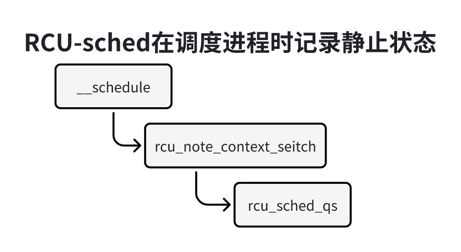
如下图所示，时钟终端处理器程序调用函数rcu_check_callbacks检查静止状态。函数rcu_check_callbacks的代码如下：
111// 位置：kernel/rcu/tree.c2
3void rcu_check_callbacks(int user)4{5 ...6 if(user || rcu_is_cpu_rrupt_from_idle()){7 rcu_sched_qs();8 ...9 }10 ...11}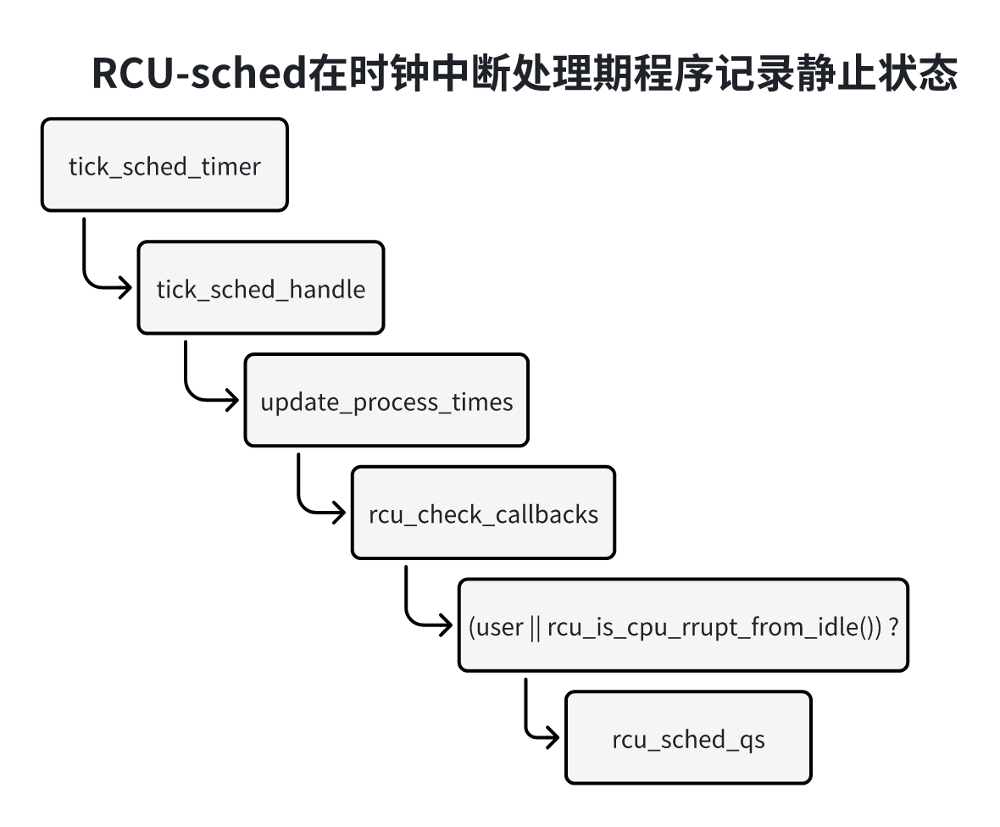
user为1表示“当前进程正在用户模式下运行”。
“rcu_is_cpu_rrupt_from_idle()”表示处理器正在执行空闲线程，并且时钟终端是第一层中断。为什么要求时钟中断是第一层中断？如果是第二层中断，说明第一层中断正在执行下半部，下半部可能正在执行读端临界区，第二层中断抢占第一层中断的下半部。
通过这两个时间观察到静止状态，调用链路rcu_sched_qs记录静止状态。
函数rcu_sched_qs记录静止状态，代码如下：
101// 位置：kernel/tcu/tree.c2
3void rcu_sched_qs(void)4{5 if(!__this_cpu_read(rcu_sched_data.cpu_no_qs.s))6 return ;7 ...8 __this_cpu_write(rcu_sched_data.cpu_no_qs.b.norm, false);9 ...10}如果灭有记录静止状态，那么记录本处理器经历了静止状态，把rcu_sched_data实例的尘缘cpu_no_qs.b.norm设置为false，RCU不管协处理器惊了多少个静止状态，只关系是否经历静止状态。
加速版不可抢占RCU（RCU_bh）使用哈数rcu_read_bh()标记读端临界区的开始，使用函数rcu_read_unlock_bh()标记读端临界区的结束。
从代码上看，函数rcu_read_lock_bh()禁止软中断，函数rcu_read_unlock_bh()开启软中断。
131// 位置：inlcude/linux/rcudata.h2
3static inline void rcu_read_lock_bh(void)4{5 local_bh_disable();6 ...7}8
9static inline void rcu_read_unlock_bh(void)10{11 ...12 local_bh_enable();13}加速版不可抢占RCU通过一下时间观察到静止状态。
1）执行完软中断，因为RCU_bh的读端临渭区禁止软中断，所以进程在读端临界区里面不会被软中断抢占。考虑到软中断也可能执行读端临界区，所以执行完软中断的时候，处理器一定不在读端临界区里面。
2）当进程正在用户模式下运行。
3）处理器空闲，正在执行空闲线程。
4）处理器没有执行软中断或禁止软职能端的代码区域。
如下图所示，执行完一轮中断后，禁止硬中断之前，调用函数rcu_bh_qs记录静止状态。
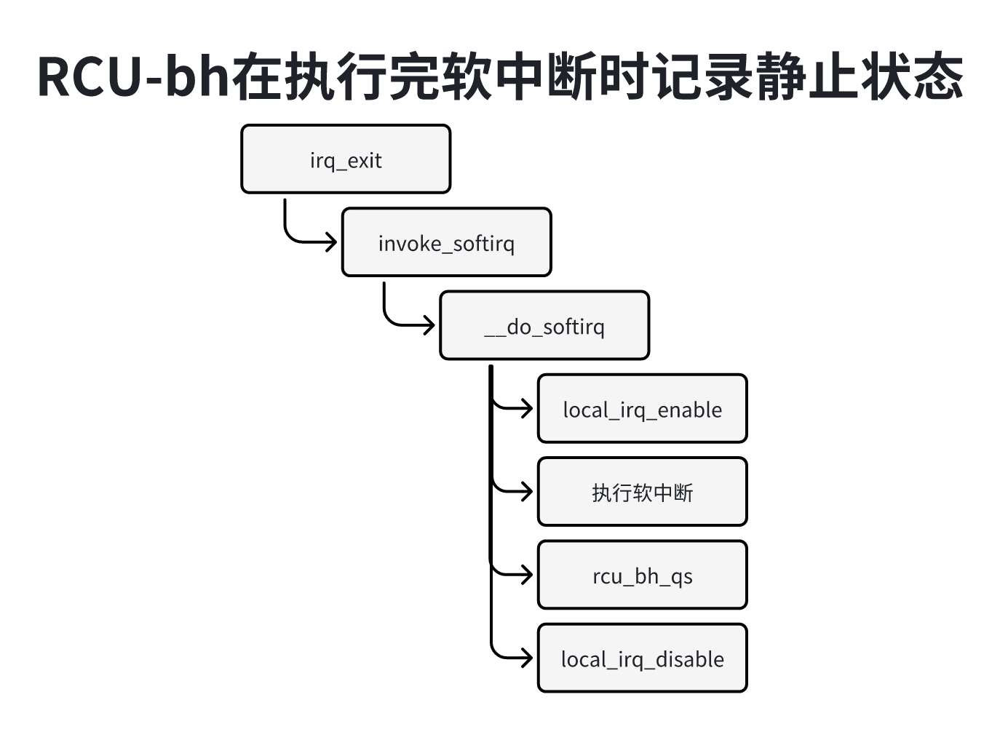
如下图所示，时钟中断处理程序调用函数rcu_check_callbacks检查静止状态。函数rcu_check_callbacks的代码如下：
131// 位置：kernel/rcu/tree.c2
3void rcu_checu_callbacks(int user)4{5 ...6 if(user || rcu_is_cpu_rrupt_from_idle()){7 ...8 rcu_bh_qs();9 }else if(!in_sofirq()){10 rcu_bh_qs();11 ...12 }13}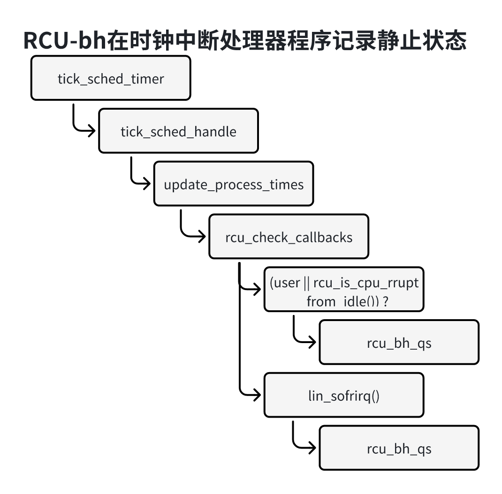
user为true表示“当前进程正在用户模式下运行”。
“rcu_is_cpu_rrupt_from_idle()”表示处理器正在执行空闲线程，并且时钟中断层是第一层中断。
“!in_softirq()”表示时钟中断打断的时候，处理器没有执行软中断或禁止软中断的代码区域。
通过3个事件观察到静止状态，调用函数rcu_bh_qs记录静止状态。
91// 位置：kernel/rcu/tree.c2
3void rch_bh_qs(void)4{5 if(__this_cpu_read(rcu_bh_data.cpu_no_qs.s)){6 ...7 __this_cpu_write(rcu_bh_data.cpu_no_qs.b.norm, falase);8 }9}如果没有记录过静止状态，那么记录本处理器经历了静止状态，把rcu_bh_data实例的尘缘cpu_no_qs.b.norm设置为false。
可抢占RCU（RCU-preempt）允许进程在独断临界区里面被其他进程抢占，使用函数rcu_read_lock()标记读端临界区的开始，使用函数rcu_read_unlock()标记读端临界区的结束。
可抢占RCU观察静止状态，需要考虑以下因素：
1）进程在独断临界区里面被其他进程抢占以后，可能被迁移到其他处理器：可能是同一个分组的其他处理器，也可能是其他分组的处理器。造成的后果是：进程可能在一个处理器上进入读端临界区，在同一个分组的另一个处理器上退出独断临界区；进程能在一个分区中进入读端临界区，在另一个分组中退出独断临界区。
2）读端临界区可能嵌套。
可抢占RCU观察静止状态的视线方案如下：
1）不是以处理器为单位观察静止状态，而是以底层分组为单位观察静止状态。不可抢占RCU和加速版不可抢占RCU是以处理器为单位观察静止状态。
2）进程需要记录独断临界区的嵌套层数，进入独断临界区的时候把嵌套层数加1，推倒胡读端临界区的时候把嵌套层数减1，当嵌套层数变成-0的时候，说明进程已退出最外层的读端临界区。
3）当进程在独断临界区里面被其他进程抢占的时候，把进程添加到分组的阻塞进程链表中，并且记录分组。
4）当进程退出最外层的读端临界区的时候，把进程从分组的阻塞进程链表中删除。如果分组的阻塞进程链表变成空，那么观察到一个静止状态。注意这里的分组是第3步记录的分组，不是进程当前所在的处理器的分组。换句话说，在分组n中进入读端临界区的进程，不管是不是分组n中退出读端临界区，都看作在分组n中退出读端临界区。当在分组n中进入读端临界区的所有进程退出读端临界区的时候，分组n观察到一个禁止状态。
举例说明：假设处理器0属于分组0，处理器16属于分组1。进程在处理器0上运行，在读端临界区里面被其他进程抢占的时候，把进程添加到分组0的阻塞进程链表中。然后进程被迁移到处理器16，退出最外层的读端临界区，把进程从分组0的阻塞进程链表中删除，分组0的阻塞进程链表变成空，观察到分组0的一个静止状态。
可抢占RCU在进程描述符里面增加了成员：
161// 位置：inlcude/linux/sched.h2
3struct task_struct{4 ...5 6 // 记录独断临界区的嵌套次数7 int rcu_read_lock_nesting;8 union rcu_special rcu_read_unlock_special;9 // 当进程在读端临界区里面被其他进程抢占的时候，使用成员rcua_node_entity把进程10 // 加入分组的阻塞进程链表，使用成员rcu_blocked_node记录当前处理器所属的分组 11 struct list_head rcu_node_entity;12 struct rcu_node *rcu_blocked_node;13 14 ...15 16};rcu_special数据类型如下：
121union rcu_special{2 struct {3 // 如果是true，表示进程在读端临界区里面被其他进程抢占，阻塞了当前宽限期4 u8 blocked;5 // 如果为true，表示需要进程报告正常宽限期的静止状态。6 u8 need_qs;7 // 如果为true，表示需要进程报告加速宽限期的静止状态8 u8 exp_need_qs;9 u8 pad; 10 } b;11 u32 s;12}可抢占RCU在数据类型rcu_node中增加一下成员：
141// 位置：kernel/rcu/tree.h2
3struct rcu_node{4 ...5 // 阻塞进程链表，保存在独断临渭区里面被其他进程抢占的进程6 struct list_head blkd_tasks;7 // 指向阻塞当前正常宽限期的第一个进程，从这个节点开始的链表尾部的所有进程都8 // 阻塞当前这场宽限期9 struct list_head *gp_tasks;10 // 指向这色当前加速宽限期的第一个进程，从这个节点开始的链表尾部的所有进程11 // 都阻塞当前加速限期12 struct list_head *exp_tasks;13 ...14} __cachline_internodeligned_in_smp;只有叶子节点使用这色进程链表，阻塞进程链表的数据结构如下图所示：
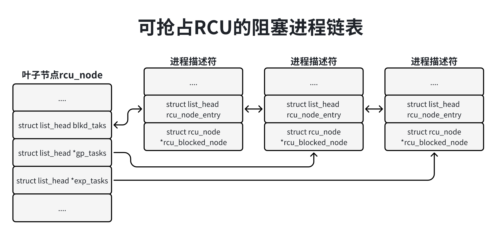
从首部gp_tasks的前一个链表节点是没有阻塞当前宽限期的进程。
从gp_tasks到尾部是阻塞当前正常宽限期的进程。
从exp_tasks到尾部是阻塞当前加速宽限期的进程。
进入读端临界区：函数rcu_read_lock()把当前进程的读端临界区的嵌套次数加1，代码如下：
111// 调用链路：rcu_read_lock() -> __rcu_read_lock()2// 位置：kernel/rcu/update.c3
4void __rcu_read_lock(void)6{7 current -> rcu_read_lock)nesting++;8 barrier();9}10
11在读端临界区里面被抢占：当进程独断临界区里面被抢占的时候，执行流程如下图所示，函数rcu_preempt_note_context_witch代码如下：
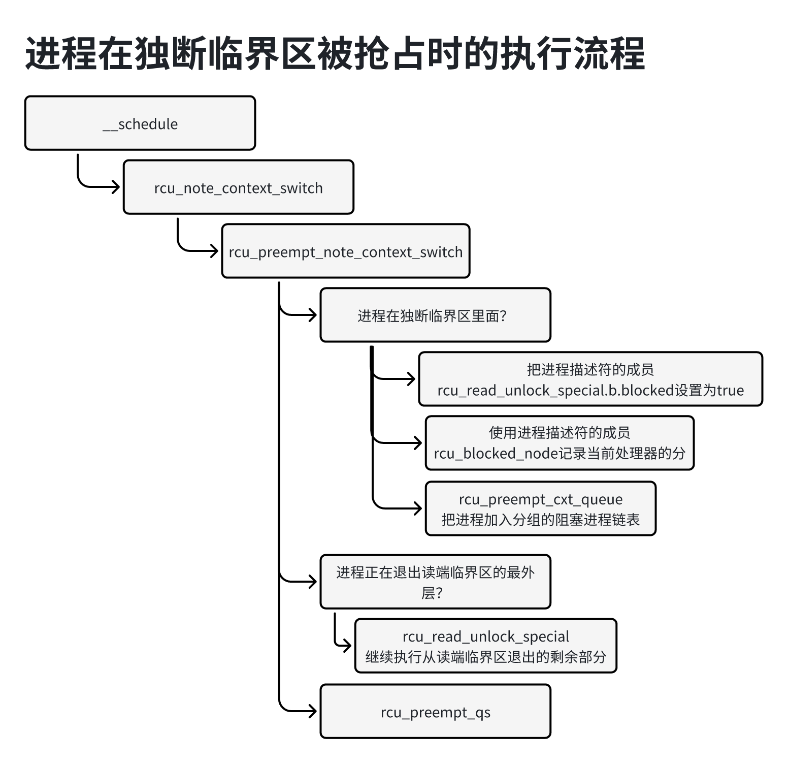
391// 位置：kenerl/rcu/tree_plugin.h2
3static void rcu_preempt_note_context_switch(void)4{5 struct task_struct *t = current;6 struct rcu_data *rdp;7 struct rcu_node *rnp;8
9 // 如果进程在读端临界区里面，处理10 if (t->rcu_read_lock_nesting > 0 &&11 !t->rcu_read_unlock_special.b.blocked) {12 13 rdp = this_cpu_ptr(rcu_state_p->rda);14 rnp = rdp->mynode;15 raw_spin_lock_rcu_node(rnp);16 // 记录进程被抢占，把进程描述符的成员rcu_read_unlock_special.b.blocked设置为true17 t->rcu_read_unlock_special.b.blocked = true;18 // 使用进程描述符的成员rcu_blocked_ctxt_queue()，把进程加入分组的阻塞进程链表。19 t->rcu_blocked_node = rnp;20
21 WARN_ON_ONCE((rdp->grpmask & rcu_rnp_online_cpus(rnp)) == 0);22 WARN_ON_ONCE(!list_empty(&t->rcu_node_entry));23 trace_rcu_preempt_task(rdp->rsp->name,24 t->pid,25 (rnp->qsmask & rdp->grpmask)26 ? rnp->gpnum27 : rnp->gpnum + 1);28 rcu_preempt_ctxt_queue(rnp, rdp);29 // 如果进程描述符的成员rcu_read_lock_nesting是负数，说明进程正在退出读端临界区30 // 的最外层，那么继续执行从读端line汲取退出的剩余部分31 } else if (t->rcu_read_lock_nesting < 0 &&32 t->rcu_read_unlock_special.s) {33
34 rcu_read_unlock_special(t);35 }36
37 // 记录静止状态38 rcu_preempt_qs();39}函数rcu_preempt_ctxt_queue：把进程加入分组的阻塞进程链表。
假设没有加速宽限期，只有正常宽限期，处理如下：
-> 如果分组的静止状态位图未包含本处理器，说明当前宽限期不需要等待本处理器的静止状态，进程没有阻塞当前宽限期，那么把进程添加到链表的首部。
-> 如果分组的静止状态位图包含本处理器，说明当前宽限期需要等待本处理器的静止状态，进程阻塞当前宽限期，那么处理如下：如果分组的成员gp_tasks没有执行进程，那么把进程添加到链表尾部，并且成员gp_tasks指向这个进程；如果分组的成员gp_tasks已经指向第一个阻塞当前宽限期的进程，那么把进程添加到gp_tasks的后面。
函数rcu_preempt_qs：函数rcu_preempt_qs记录静止状态，代码如下：
151// 位置：kernel/rcu/tree_plugin.h2
3static void rcu_preempt_qs(void)4{5 // 如果没有记录过静止状态，处理如下6 if(__this_cpu_read(rcu_data_p -> cpu_no_qs.s)){7 ...8 // 记录本处理器李经理了静止状态，把本处理器的rcu_data实例的尘缘cpu_no_qs.b.norm设置为false9 __this_cpu_write(rcu_data_p -> cpu_no_qs.b.norm, false);10 barrier();11 // 把当前进程的rcu_read_unlock_special.b.need_qs设置为false12 // 表示不需要当前进程报告正常宽限期的静止状态13 current() -> rcu_read_unlock_special.b.need_qs = false;14 }15}认为以处理器为单位记录紧抓状态没有实际意义，那么什么这么做？因为3种RCU共用绝大部分代码，可抢占RCU也可以处理器为单位宽限期的静止状态。
退出读端临界区：函数rcu_read_unlock()的代码如下：
351// 链路：rcu_read_unlock() -> __rcu_read_unlock()2// 位置：kernel/rcu/update.c3
4
6void __rcu_read_unlock(void)7{8 struct task_struct *t = current;9
10 // 如果读端临界区的嵌套次数大于1，那么把嵌套次数减1，立即返回11 if (t->rcu_read_lock_nesting != 1) {12 --t->rcu_read_lock_nesting;13 } else {14 // 如果读端临界区的嵌套次数是1，说明进程退出读端临界区的最外层，15 barrier(); 16 // 把嵌套次数设置为负数，如果次数进程被其他进程抢占，那么函数rcu_preempt_note_context_switch17 // 看到嵌套次数是负数，知道进程正在退出读端临界区的最外层，就会继续执行从读端临界区退出的剩余部分18 t->rcu_read_lock_nesting = INT_MIN;19 barrier(); 20 // 如果进程在独断临界区里面被其他进程抢占过，那么调用函数rcu_read_unlcok_special()21 // 把进程从分组的阻塞进程链表中删除22 if (unlikely(READ_ONCE(t->rcu_read_unlock_special.s)))23 rcu_read_unlock_special(t);24 barrier();25 // 把嵌套次数设置为026 t->rcu_read_lock_nesting = 0;27 }28 {30 int rrln = READ_ONCE(t->rcu_read_lock_nesting);31
32 WARN_ON_ONCE(rrln < 0 && rrln > INT_MIN / 2);33 }34}函数rcu_read_unlock_special负责把进程从分组的阻塞进程链表中删除，器代码如下：
541// 位置：kernel/rcu/tree_plugin.h2
3void rcu_read_unlock_special(struct task_struct *t)4{5 ...6 special = t->rcu_read_unlock_special;7 ...8 // 如果进程在读端临界区里面被其他进程抢占过，9 if (special.b.blocked) {10 // 清除进程在读端临界区里面被其他进程抢占过的标志11 t->rcu_read_unlock_special.b.blocked = false;12
13 rnp = t->rcu_blocked_node;14 raw_spin_lock_rcu_node(rnp); 15 WARN_ON_ONCE(rnp != t->rcu_blocked_node);16 empty_norm = !rcu_preempt_blocked_readers_cgp(rnp);17 empty_exp = sync_rcu_preempt_exp_done(rnp);18 smp_mb();19 np = rcu_next_node_entry(t, rnp);20 // 把进程从分组的阻塞进程链表中删除21 list_del_init(&t->rcu_node_entry);22 t->rcu_blocked_node = NULL;23 trace_rcu_unlock_preempted_task(TPS("rcu_preempt"),24 rnp->gpnum, t->pid);25 // 如果进程是第一个阻塞当前正常宽限期的进程，难呢把分组的成员gp_tasks指向下一个进程26 if (&t->rcu_node_entry == rnp->gp_tasks)27 rnp->gp_tasks = np;28 if (&t->rcu_node_entry == rnp->exp_tasks)29 rnp->exp_tasks = np;30 if (IS_ENABLED(CONFIG_RCU_BOOST)) {31 if (&t->rcu_node_entry == rnp->boost_tasks)32 rnp->boost_tasks = np;33 34 drop_boost_mutex = rt_mutex_owner(&rnp->boost_mtx) == t;35 }36
37 ...38 // 如果进程时最后一个阻塞当前正常宽限期的进程，那么记录分组的静止状态39 if (!empty_norm && !rcu_preempt_blocked_readers_cgp(rnp)) {40 ...41 rcu_report_unblock_qs_rnp(rcu_state_p, rnp, flags);42 } else {43 raw_spin_unlock_irqrestore_rcu_node(rnp, flags);44 }45
46 if (IS_ENABLED(CONFIG_RCU_BOOST) && drop_boost_mutex)47 rt_mutex_unlock(&rnp->boost_mtx);48
49 if (!empty_exp && empty_exp_now)50 rcu_report_exp_rnp(rcu_state_p, rnp, true);51 } else {52 local_irq_restore(flags);53 }54}如果一个处理器经历了静止状态，那么需要向分组报告静止状态。如果是分组中最后一个机灵静止状态的处理器，那么还需要代表分组向上一层分组报告静止状态。当根节点的所有成员都报告了静止转状态后，当前宽限期可以结束。
如下图所示，时钟中断处理器调用函数rcu_check_callbacks，函数rcu_check_callbacks调用函数rcu_pending以检查本处理器是否有oRCU相关的工作需要处理器，如果有那么触发RCU软中断。
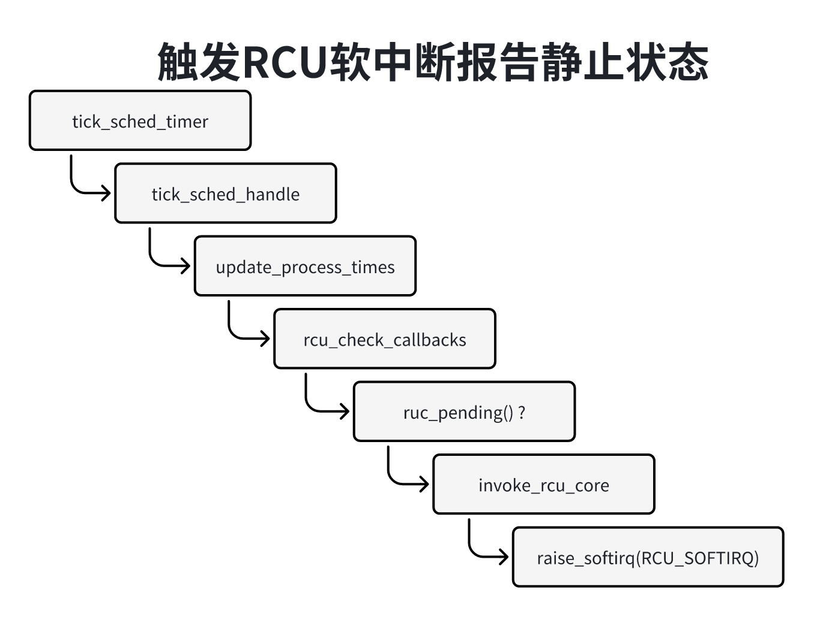
函数rcu_pending把主要工作委托给函数__rcu_pending，函数__rcu_pending，函数__rcu_pending检查是否需要报告静止状态的代码如下：
121// 位置：kernel/rcu/tree.c2static int __rcu_pending(struct rcu_state *rsp, struct rcu_data *rdp)3{4 struct rcu_node *rnp = rdp->mynode;5 ...6 if(..){7 ..8 }else if(rdp->core_needs_qs && !rdp -> cpu_no_qs){9 rdp->n_rp_report_qs ++ ;10 return 1;11 }12}rdp->core_needs_qs为true表示RCU需要本处理器报告静止状态，!rdp->cpu_no_qs.b.norm为true表示本处理经历了正常宽限期的静止状态。
如下图所示，RCU软中断的处理函数rcu_process_callbacks调用函数rcu+check_quiescent_state来检查是否需要报告静止状态。如果RCU需要本处理器报告静止状态，并且本处理器经历了正常宽限期的静止状态，那么调用函数rcu_report_qs_rdp报告静止状态。
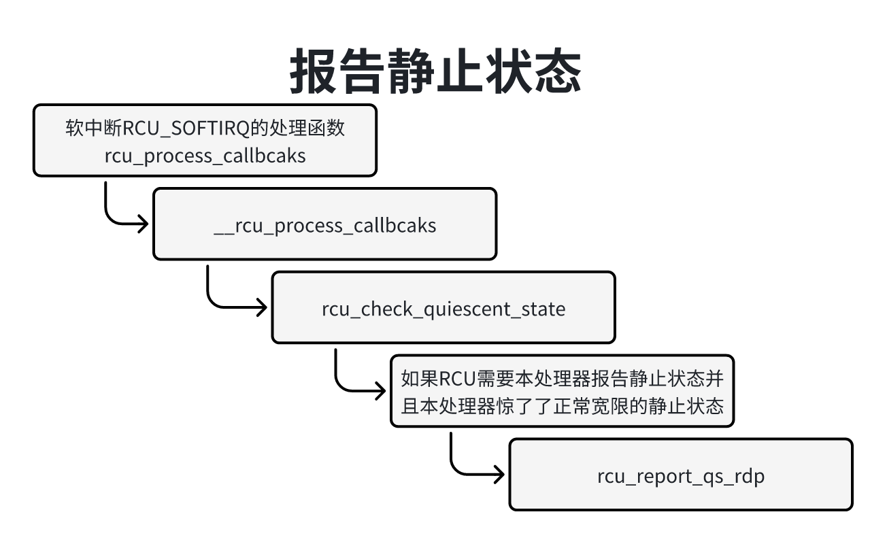
函数rcu_report_qs_rdp负责报告静止状态，代码：
391// 位置：kernel/rcu/tree.c2
3static void4rcu_report_qs_rdp(int cpu, struct rcu_state *rsp, struct rcu_data *rdp)5{6 unsigned long flags;7 unsigned long mask;8 bool needwake;9 struct rcu_node *rnp;10
11 rnp = rdp->mynode;12 raw_spin_lock_irqsave_rcu_node(rnp, flags);13 // 如果本处理器看到当前宽限期是已经结束的宽限期嘛呢不需要报告静止状态14 if (rdp->cpu_no_qs.b.norm || rdp->gpnum != rnp->gpnum ||15 rnp->completed == rnp->gpnum || rdp->gpwrap) {16
17 18 rdp->cpu_no_qs.b.norm = true; /* need qs for new gp. */19 rdp->rcu_qs_ctr_snap = __this_cpu_read(rcu_dynticks.rcu_qs_ctr);20 raw_spin_unlock_irqrestore_rcu_node(rnp, flags);21 return;22 }23 mask = rdp->grpmask;24 // 如果叶子节点的静止状态位图没有包含本处理器，那么不需要报告静止状态25 if ((rnp->qsmask & mask) == 0) {26 raw_spin_unlock_irqrestore_rcu_node(rnp, flags);27 } else {28 // 如果没有报告静止状态，那么调用函数rcu_report_qs_rnp报告本处理器惊了宽限期编号是29 // rmp->gpnum静止状态30 rdp->core_needs_qs = false;31
32 needwake = rcu_accelerate_cbs(rsp, rnp, rdp);33
34 rcu_report_qs_rnp(mask, rsp, rnp, rnp->gpnum, flags);35
36 if (needwake)37 rcu_gp_kthread_wake(rsp);38 }39}函数rcu_reposrt_qs_rdp把报告静止状态的主要工作委托给函数rcu_reposrt_qs_rnp，函数rcu_report_qs_rnp代码如下：
501// 位置：kernel/rcu/tree.c2
3static void4rcu_report_qs_rnp(unsigned long mask, struct rcu_state *rsp,5 struct rcu_node *rnp, unsigned long gps, unsigned long flags)6 __releases(rnp->lock)7{8 unsigned long oldmask = 0;9 struct rcu_node *rnp_c;10
11 // 从叶子节点向上到根节点注册报告静止状态12 for (;;) {13 14 // 如果节点的静止状态位图没有设置成当前陈冠的位，如果节点的当前宽限期编号不等于本处理器看到的当前宽限期编号15 // 那么不需要报告静止状态16 if (!(rnp->qsmask & mask) || rnp->gpnum != gps) {17 raw_spin_unlock_irqrestore_rcu_node(rnp, flags);18 return;19 }20 WARN_ON_ONCE(oldmask); 21 // 从节点的静止状态位图中清除当前成员的位22 rnp->qsmask &= ~mask;23 trace_rcu_quiescent_state_report(rsp->name, rnp->gpnum,24 mask, rnp->qsmask, rnp->level,25 rnp->grplo, rnp->grphi,26 !!rnp->gp_tasks);27 28 // 如果节点的静止状态位图不是节点的静止状态位图不是0，说明其他成员没有报告静止状态29 // 那么不需要继续上报，如果是可抢占RCU节点的静止状态位图是0不能说明所有成员经历了静止状态，还要看节点的成员30 // gp_tasks是否指向第一个在读端临界区里面被抢占的进程31 if (rnp->qsmask != 0 || rcu_preempt_blocked_readers_cgp(rnp)) {32
33 raw_spin_unlock_irqrestore_rcu_node(rnp, flags);34 return;35 }36 mask = rnp->grpmask;37 // 如果是根节点的所有成员报告了静止状态，当前宽限期可以结束38 if (rnp->parent == NULL) {39 break;40 }41 raw_spin_unlock_irqrestore_rcu_node(rnp, flags);42 rnp_c = rnp;43 // 单签节点的所有成员报告了静止状态，本处理器代表当前节点继续向上一层节点报告静止状态44 rnp = rnp->parent;45 raw_spin_lock_irqsave_rcu_node(rnp, flags);46 oldmask = rnp_c->qsmask;47 }48
49 // 根节点的所有成员报告了静止状态，调用函数rcu_report_qs_rsp通知宽限期线程结束当前宽限期50 rcu_report_qs_rsp(rsp, flags); 函数rcu_report_qs_rsp负责通知宽限期线程结束当前宽限期，代码如下：
131// 位置：kernel/rcu/tree.c2
3static void rcu_report_qs_rsp(struct rcu_state *rsp, unsigned long flags)4 __releases(rcu_get_root(rsp)->lock)5{6 WARN_ON_ONCE(!rcu_gp_in_progress(rsp));7 // 给rcu_state实例的成员gp_flags设置别致位RCU_GP_FLAG_FQS通知宽限期贤臣8 // “所有处理器经历了静止状态”9 WRITE_ONCE(rsp->gp_flags, READ_ONCE(rsp->gp_flags) | RCU_GP_FLAG_FQS);10 raw_spin_unlock_irqrestore_rcu_node(rcu_get_root(rsp), flags);11 // 唤醒宽限期以结束当前宽限期12 rcu_gp_kthread_wake(rsp);13}每种RCU创建了一个宽限期线程，专门负责启动新的宽限期和结束当前宽限期。数据类型rcu_state中和宽限期线程相关的线程如下：
231// 位置：kernel/rcu/tree.h2
3struct rcu_state {4 ...5 // 指向宽限期的线程6 struct task_struct *gp_kthread;7 // 宽限线程的等待队列8 struct swait_queue_head gp_wq;9 // 用来指向宽限线程传递命令，目前有两个标志位：10 // RCU_GP_FLAG_INIT表示需要敲定新的宽限期11 // RCU_GP_FLAGS_FQS表示需要强制静止状态12 short gp_flags;13 // 宽限线程的睡眠状态，14 // #define RCU_GP_IDLE 0 没有宽限期15 // #define RCU_GP_WAIT_GFP 1 等待宽限期开始16 // #define RCU_GP_DONE_GPS 2 停止等待宽限期开始17 // #define RCU_GP_WAIT_FQS 3 等待强制静止状态时刻18 // #define RCU_GP_DOING_FQS 4 停止等待期强制静止状态时刻19 // #define RCU_GP_CLWANUP 5 宽限期清理开始20 // #define RCU_GP_CLEANED 6 宽限期清理结束21 short gp_state;22 ...23}宽限期线程的处理函数rcu_gp_kthread代码如下：
1201// 位置：kernel/rcu/tree.c2
3static int __noreturn rcu_gp_kthread(void *arg)4{5 bool first_gp_fqs;6 int gf;7 unsigned long j;8 int ret;9 struct rcu_state *rsp = arg;10 struct rcu_node *rnp = rcu_get_root(rsp);11
12 /**13 * 启用新的宽限期14 */15 rcu_bind_gp_kthread();16 for (;;) {17 for (;;) {18 trace_rcu_grace_period(rsp->name,19 READ_ONCE(rsp->gpnum),20 TPS("reqwait"));21 // 把睡眠状态设置为RCU_GP_WAIT_GPS，表示等待宽限期开始通知22 rsp->gp_state = RCU_GP_WAIT_GPS;23 // 等待通知启动新的宽心亲爱，即rcu_state实例的成员gp_flags被设置壁24 // 标志位RCU_GP_GLAG_INIT25 swait_event_interruptible(rsp->gp_wq,26 READ_ONCE(rsp->gp_flags) &27 RCU_GP_FLAG_INIT);28 // 把睡眠状态设置为RCU_GP_DONE_GPS29 rsp->gp_state = RRCU_GP_DONE_GPS;30 // 调用函数rcu_gp_init以初始化新的宽限期31 if (rcu_gp_init(rsp))32 break;33 cond_resched_rcu_qs();34 WRITE_ONCE(rsp->gp_activity, jiffies);35 WARN_ON(signal_pending(current));36 trace_rcu_grace_period(rsp->name,37 READ_ONCE(rsp->gpnum),38 TPS("reqwaitsig"));39 }40
41 first_gp_fqs = true;42 j = jiffies_till_first_fqs;43 if (j > HZ) {44 j = HZ;45 jiffies_till_first_fqs = HZ;46 }47 ret = 0;48 /**49 * 等待强制静止状态，设置超时。如果提前唤醒，说明所有处理器经历静止状态50 * 如果到期，说明一部分处理器没有经历静止状态，必须强制这些处理器产生静止状态51 */52 for (;;) {53 if (!ret) {54 rsp->jiffies_force_qs = jiffies + j;55 WRITE_ONCE(rsp->jiffies_kick_kthreads,56 jiffies + 3 * j);57 }58 trace_rcu_grace_period(rsp->name,59 READ_ONCE(rsp->gpnum),60 TPS("fqswait"));61 // 把睡眠状态设置为RCU_GP_WAIT_FQS62 rsp->gp_state = RCU_GP_WAIT_FQS;63 // 等到rcu_state实例的成员gp_flags被设置标志位RCU_GP_FLAFG_FQS设置超时64 ret = swait_event_interruptible_timeout(rsp->gp_wq,65 rcu_gp_fqs_check_wake(rsp, &gf), j);66 // 把睡眠状态设置为RCU_GP_DOING_FQS67 rsp->gp_state = RRCU_GP_DOING_FQS68 // 如果所有处理器经历静止状态，那么计数当前宽限期69 if (!READ_ONCE(rnp->qsmask) &&70 !rcu_preempt_blocked_readers_cgp(rnp))71 break;72 // 如果等待超时，那么强制没有欧经理静止状态的处理器产生静止状态73 if (ULONG_CMP_GE(jiffies, rsp->jiffies_force_qs) ||74 (gf & RCU_GP_FLAG_FQS)) {75 trace_rcu_grace_period(rsp->name,76 READ_ONCE(rsp->gpnum),77 TPS("fqsstart"));78 rcu_gp_fqs(rsp, first_gp_fqs);79 first_gp_fqs = false;80 trace_rcu_grace_period(rsp->name,81 READ_ONCE(rsp->gpnum),82 TPS("fqsend"));83 cond_resched_rcu_qs();84 WRITE_ONCE(rsp->gp_activity, jiffies);85 ret = 0; 86 j = jiffies_till_next_fqs;87 if (j > HZ) {88 j = HZ;89 jiffies_till_next_fqs = HZ;90 } else if (j < 1) {91 j = 1;92 jiffies_till_next_fqs = 1;93 }94 } else {95 cond_resched_rcu_qs();96 WRITE_ONCE(rsp->gp_activity, jiffies);97 WARN_ON(signal_pending(current));98 trace_rcu_grace_period(rsp->name,99 READ_ONCE(rsp->gpnum),100 TPS("fqswaitsig"));101 ret = 1;102 j = jiffies;103 if (time_after(jiffies, rsp->jiffies_force_qs))104 j = 1;105 else106 j = rsp->jiffies_force_qs - j;107 }108 }109
110 /*111 * 结束当前宽限期112 */113 // 把睡眠状态设置为RCU_GP_CLEANUP表示宽限清理开始114 rsp->gp_state = RCU_GP_CLEANUP;115 // 调用函数rcu_gp_cleanup处理当前宽限期结束116 rcu_gp_cleanup(rsp);117 // 把睡眠状态设置为RCU_UP_CLEANED118 rsp->gp_state = RCU_GP_CLEANED;119 }120}通知启动新的宽限期：以下情况下启动新的宽限期：
RCU软中断发现需要新的宽限期。
函数rcu_gp_cleanup结束当前宽限期的时候，如果发现调用call_rcu注册了新的回调函数，就会通知启动新的宽限期。
通知的方式是给rcu_state实例的成员gp_flags设置标志位RCU_GP_FLAG_INIT。
RCU软中断发现需要新的宽限期，通知启动新的宽限期，执行流程如下图所示：
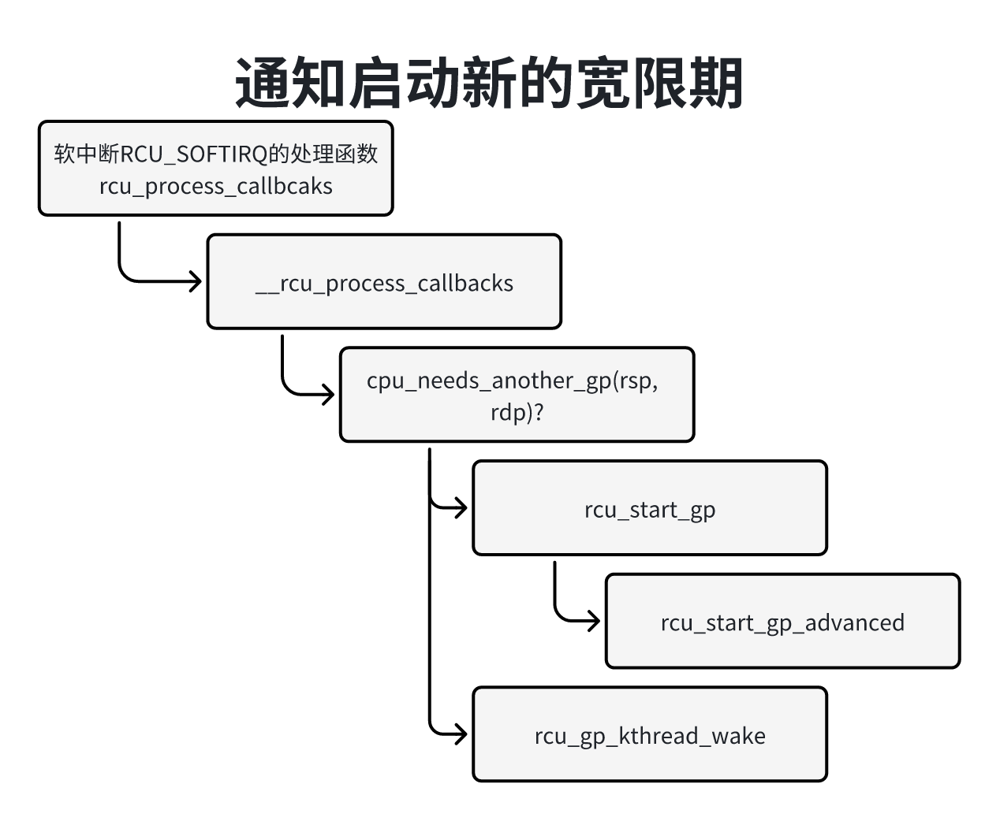
函数__rcu_process_callbacks代码如下：
321// 位置：kernel/rcu/tree.c2
3static void4__rcu_process_callbacks(struct rcu_state *rsp)5{6 unsigned long flags;7 bool needwake;8 struct rcu_data *rdp = raw_cpu_ptr(rsp->rda);9
10 WARN_ON_ONCE(!rdp->beenonline);11
12 rcu_check_quiescent_state(rsp, rdp);13
14 local_irq_save(flags);15 // 调用函数cpu_needs_another_gp，检查是否需要启动新的宽限期16 if (cpu_needs_another_gp(rsp, rdp)) {17 raw_spin_lock_rcu_node(rcu_get_root(rsp)); 18 // 调用函数rcu_start_gp，通知启动新的宽限期19 needwake = rcu_start_gp(rsp);20 raw_spin_unlock_irqrestore_rcu_node(rcu_get_root(rsp), flags);21 if (needwake)22 // 唤醒宽限期线程23 rcu_gp_kthread_wake(rsp);24 } else {25 local_irq_restore(flags);26 }27
28 if (rcu_segcblist_ready_cbs(&rdp->cblist))29 invoke_rcu_callbacks(rsp, rdp);30
31 do_nocb_deferred_wakeup(rdp);32}函数cpu_needs_another_gp检查是否启动新的宽限期，代码如下：
251// 位置：kernel/rcu/tree.c2
3static bool4cpu_needs_another_gp(struct rcu_state *rsp, struct rcu_data *rdp)5{6 // 如果当前宽限期没有结束，那么不需要启动新的宽限期7 if (rcu_gp_in_progress(rsp))8 return false; 9 // 如果需要未来的宽限期，那么需要启动新的宽限期10 if (rcu_future_needs_gp(rsp))11 return true;12 // 如果是不执行RCU回调函数的处理器伙食下线的处理器，那么不需要启动西悉尼的宽限期13 if (!rcu_segcblist_is_enabled(&rdp->cblist))14 return false; 15 // 如果使用call_rcu注册了新的回调函数，那么需要启动新的宽限期16 if (!rcu_segcblist_restempty(&rdp->cblist, RCU_NEXT_READY_TAIL))17 return true; 18 // 如果回调函数的子链表RCU_WAIT_TAIL或RCU_NEXT_REAY_TAIL不是空的，并且宽限期编号19 // 大于已结束宽限期编号，那么需要启动新的宽限期20 if (rcu_segcblist_future_gp_needed(&rdp->cblist,21 READ_ONCE(rsp->completed)))22 return true; 23 return false; 24}25
启动新的宽限期：宽限期线程启动新的宽限期时，执行过程如下：
把rcu_state实例的宽限期编号加1。
从根节点开始层次遍历RCU树的每个节点，把节点的宽限期编号更新为新的宽限期限期编号，初始化静止状态位图。
假设把宽限期线程在处理器n上运行，初始化处理器n的rcu_data实例。
把成员gnum更新为新的宽限期编号。
把成员cpu_no_qs.b.norm初始化为true，表示没有经历静止状态。
把成员core_needs_qsa初始化为true，百世需要改处理器报告静止状态。增加这个成员是为了支持处理器热插拔，如果某个处理器下线，那么叶子节点的静止状态位图不包含该处理器，RCU不需要改处理器报告静止状态。
每个处理器只能初始化自己的rcu_data实例，其他处理器在自己的RCU软中断里面初始化rcu_data实例。这会造成同一时刻 不同处理器看到的当前宽限编号不同。
函数rcu_gp_init负责启动新的宽限期，主要代码如下：
421// 位置：kernel/rcu/tree.c2
3static bool rcu_gp_init(struct rcu_state *rsp)4{5 unsigned long oldmask;6 struct rcu_data *rdp;7 struct rcu_node *rnp = rcu_get_root(rsp);8
9 ...10 raw_spin_lock_irq_rcu_node(rnp);11 ...12 // 把宽限期编号加113 smp_store_release(&rsp->gpnum, rsp->gpnum + 1);14 ...15 raw_spin_unlock_irq_rcu_node(rnp);16 ...17 // 从根节点开始按层次遍历树节点，针对每个节点进行下面的处理器18 rcu_for_each_node_breadth_first(rsp, rnp) {19 rcu_gp_slow(rsp, gp_init_delay);20 raw_spin_lock_irq_rcu_node(rnp);21 rdp = this_cpu_ptr(rsp->rda);22 rcu_preempt_check_blocked_tasks(rnp);23 // 把节点的静止状态位图设置为初始值24 rnp->qsmask = rnp->qsmaskinit;25 // 把节点的宽限期编号设置为新的宽限期编号26 WRITE_ONCE(rnp->gpnum, rsp->gpnum);27 if (WARN_ON_ONCE(rnp->completed != rsp->completed))28 WRITE_ONCE(rnp->completed, rsp->completed);29 // 处理本处理器所属分组的叶子节点时，调用函数__note_gp_changes初始化本处理器的rcu_data实例30 if (rnp == rdp->mynode)31 (void)__note_gp_changes(rsp, rnp, rdp);32 rcu_preempt_boost_start_gp(rnp);33 trace_rcu_grace_period_init(rsp->name, rnp->gpnum,34 rnp->level, rnp->grplo,35 rnp->grphi, rnp->qsmask);36 raw_spin_unlock_irq_rcu_node(rnp);37 cond_resched_rcu_qs();38 WRITE_ONCE(rsp->gp_activity, jiffies);39 }40
41 return true;42}11函数__note_gp_changes负责为某个处理器的rcu_data实例处理旧的宽限期结束和新的宽限期开始，这里我们只关注处理器的宽限期开始，代码如下：
401// 位置：kernel/rcu/tree.c2
3static bool __note_gp_changes(struct rcu_state *rsp, struct rcu_node *rnp,4 struct rcu_data *rdp)5{6 bool ret;7 bool need_gp;8
9 // 如果rcu_data实例的宽限期不等于叶子节点的宽限期编号那么初始化rcu_data实例10 if (rdp->completed == rnp->completed &&11 // 把宽限期编号设置为叶子节点的宽限期编号12 !unlikely(READ_ONCE(rdp->gpwrap))) {13
14 ret = rcu_accelerate_cbs(rsp, rnp, rdp);15
16 } else {17
18 ret = rcu_advance_cbs(rsp, rnp, rdp);19
20
21 rdp->completed = rnp->completed;22 trace_rcu_grace_period(rsp->name, rdp->gpnum, TPS("cpuend"));23 }24
25 if (rdp->gpnum != rnp->gpnum || unlikely(READ_ONCE(rdp->gpwrap))) {26
27 rdp->gpnum = rnp->gpnum;28 trace_rcu_grace_period(rsp->name, rdp->gpnum, TPS("cpustart"));29 // 检查叶子节点的静止状态位图是否包含本处理器。如果包含，need_gp为tre否则为false30 need_gp = !!(rnp->qsmask & rdp->grpmask);31 // 把成员cpu_no.qs.b.norm初始化为need_gp如果为true表示处理器美欧经历静止状态32 rdp->cpu_no_qs.b.norm = need_gp;33 rdp->rcu_qs_ctr_snap = __this_cpu_read(rcu_dynticks.rcu_qs_ctr);34 // 把成员core_needs_qs初始化为need_gp，如果为true表示本处理器报告静止状态35 rdp->core_needs_qs = need_gp;36 zero_cpu_stall_ticks(rdp);37 WRITE_ONCE(rdp->gpwrap, false);38 }39 return ret;40}11如下图所示，RCU软中断调用函数note_gp_changes来检查新的宽限期：如果本处理器的rcu_data实例的宽限期本号不等于叶子节点的宽限期编号，说明了启动了新的宽限期，那么调用函数__note_gp_changes初始化rcu_data实例。
结束当前宽限期：宽限期线程结束当前宽限的执行过程如下：
从根节点开始按层次遍历RCU树的每个节点，把节点的已结束宽限期编号更新为当前宽限期编号。
假设宽限期编号在处理器n上运行，为处理器n的rcu_data实例处理器宽限期结束：
把当前宽限期以及以前注册回调函数移动到RCU_DONE_TAIL子链表中。
把成员complete更显为当前宽限期编号。
每个处理器只能处理自己的rcu_data实例，其他处理器在自己的RCU软中断里面为自己的rcu_data实例处理器宽限期结束。这会造成同一时刻不同处理器看到已结束宽限期编号不同。
函数rcu_gp_cleanup负责结束当前宽限期，代码如下：
461// 位置：kernel/tcu/tree.c2
3static void rcu_gp_cleanup(struct rcu_state *rsp)4{5 unsigned long gp_duration;6 bool needgp = false;7 int nocb = 0;8 struct rcu_data *rdp;9 struct rcu_node *rnp = rcu_get_root(rsp);10 struct swait_queue_head *sq;11
12 ....13 // 从根节点开始按照层次遍历树节点，针对每个节点进行下面的处理14 rcu_for_each_node_breadth_first(rsp, rnp) {15 raw_spin_lock_irq_rcu_node(rnp);16 ....17 // 把节点的已结束宽限期编号设置为当前宽限期编号18 WRITE_ONCE(rnp->completed, rsp->gpnum);19 rdp = this_cpu_ptr(rsp->rda);20 // 处理本处理器所属分组的叶子节点时，调用函数__note_gp_changes为本处理器21 // rcu_data实例处理器当前宽限期的结束22 if (rnp == rdp->mynode)23 needgp = __note_gp_changes(rsp, rnp, rdp) || needgp;24 ....25 raw_spin_unlock_irq_rcu_node(rnp);26 ....27 }28 rnp = rcu_get_root(rsp);29 raw_spin_lock_irq_rcu_node(rnp); 30 ....31 // 把rcu_state实例的已结束宽限期编号设置为当前宽限期编号32 WRITE_ONCE(rsp->completed, rsp->gpnum);33 ....34 // 把宽限期线程的睡眠状态设置为RCU_GP_IDLE35 rsp->gp_state = RCU_GP_IDLE;36 rdp = this_cpu_ptr(rsp->rda);37 38 needgp = rcu_advance_cbs(rsp, rnp, rdp) || needgp;39 // 如果使用call_rcu注册了新的回调函数，那么给rcu_state实例的成员gp_flags40 // 设置标志位RCU_GP_FLAG_INIT通知宽限期启动新的宽限期41 if (needgp || cpu_needs_another_gp(rsp, rdp)) {42 WRITE_ONCE(rsp->gp_flags, RCU_GP_FLAG_INIT);43 ....44 }45 raw_spin_unlock_irq_rcu_node(rnp);46}11函数__note_go_changes负责为某个处理器的rcu_data实力处理旧的宽限期结束和新的宽限期开始，这里我们只关注处理旧的宽限期结束，代码如下：
361// 位置：kernel/rcu/tree.c2
3static bool __note_gp_changes(struct rcu_state *rsp, struct rcu_node *rnp,4 struct rcu_data *rdp)5{6 bool ret;7 bool need_gp;8
9 if (rdp->completed == rnp->completed &&10 !unlikely(READ_ONCE(rdp->gpwrap))) {11
12 ret = rcu_accelerate_cbs(rsp, rnp, rdp);13
14 } else {15 // 如果rcu_data实例的已结束宽限期编号不等于叶子节点的已结束宽限期编号处理如下16 // 推进回调函数17 ret = rcu_advance_cbs(rsp, rnp, rdp);18
19 // 把已结束宽限期设置为叶子节点的以结束宽限期编号。20 rdp->completed = rnp->completed;21 trace_rcu_grace_period(rsp->name, rdp->gpnum, TPS("cpuend"));22 }23
24 if (rdp->gpnum != rnp->gpnum || unlikely(READ_ONCE(rdp->gpwrap))) {25
26 rdp->gpnum = rnp->gpnum;27 trace_rcu_grace_period(rsp->name, rdp->gpnum, TPS("cpustart"));28 need_gp = !!(rnp->qsmask & rdp->grpmask);29 rdp->cpu_no_qs.b.norm = need_gp;30 rdp->rcu_qs_ctr_snap = __this_cpu_read(rcu_dynticks.rcu_qs_ctr);31 rdp->core_needs_qs = need_gp;32 zero_cpu_stall_ticks(rdp);33 WRITE_ONCE(rdp->gpwrap, false);34 }35 return ret;36}11如下图所示，RCU软中断调用函数note_gp_changes来检查宽限期是否结束：如果本处理器的rcu_data实例的已结束宽限期编号等于叶子节点的已结束宽限期编号，说明宽限期结束，那么调用函数__note_gp_changes处理宽限期结束。
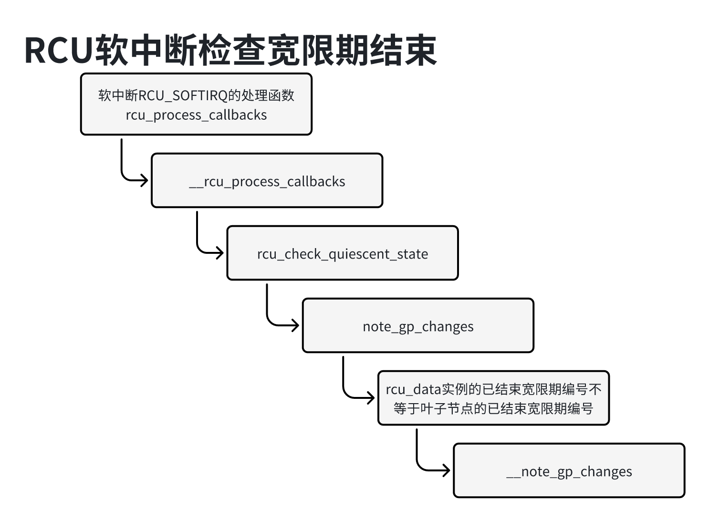
回调函数链表：每个处理器的rcu_data实例的成员cblist是回调函数链表，里面存放使用函数call_run()注册的回调函数，定义如下：
241// 位置： include/linux/rcu_segcblist.h2
3// 也是RCU_WAIT的首部4// 也是RCU_NEXT_READY的首部6// 也是RCU_NEXT的首部8
12struct rcu_segcblist {13 // 第一个回调函数14 struct rcu_head *head;15 // 指向每一段的结束位置。tail[n]是第n段的最后一个rcu_head实例的成员next的地址16 // 因为nexit是rcu_head的第一个成员，所以*tail[n]等价与(struct rcu_head * ) tail[n]17 // -> next 指向下一段的开始位置18 struct rcu_head **tails[RCU_CBLIST_NSEGS];19 // 保存每一段的宽限期编号20 unsigned long gp_seq[RCU_CBLIST_NSEGS];21 // 回调函数链表的长度22 long len;23 long len_lazy;24};如下图所示，回调函数链表分为4段，每段对应不同的宽限期：
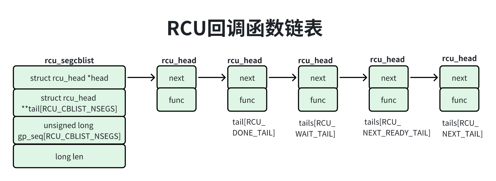
成员说明：
1、[head, *tails[RCU_DONE_TAIL]]：子链表RCU_DONE_TAIL，宽限期已结束的回调函数，可以被执行。
2、[*tails[RCU_WAIT_TAIL], *tails[RCU_WAIT_TAIL]]：子链表RCU_WAIT_TAIL，等待当前宽限期的回调函数。
3、[*tails[RCU_WAIT_TAIL], *tails[RCU_NEXT_READY_TAIL]]：子链表RCU_NEXT_READY_TAIL，在下一个宽限期开始之前添加的回到函数，在下一个宽限期可以执行这些回调函数。
4、[*tails[RCU_NEXT_READY_TAIL], *tails[RCU_NEXT_TAIL]]：子链表RCU_NEXT_TAIL，在下一个宽限期开始之后添加的回调函数。
这里说明的当前宽限期是处理器看到的当前宽限期，在宽限期线程启动新的宽限期时，处理器的rcu_data实例记录的当前宽限期可能还是旧的，落后于全局的当前宽限期。
注册回调函数：使用call_rcu注册回调函数的执行流程如下图所示，把主要工作都委托给了函数__call_rcu执行过程如下：
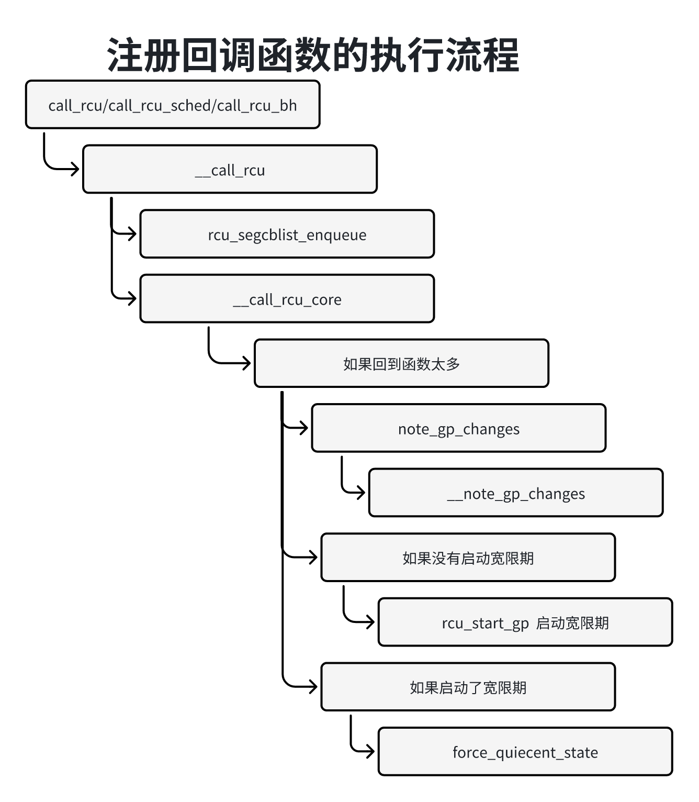
执行流程：
1、调用函数rcu_segcblist_enqueue把回调函数添加到最后一个子链表RCU_NEXT_TAIL的尾部。
2、调用函数__call_rcu_core如果回调函数太多处理如下：
-> 调用函数note_gp_change，把叶子节点的已结束宽限期和最新宽限期同步到本处理器的rcu_data实例
-> 如果没有启动宽限期，那么通知宽限期线程启动宽限期。
-> 如果启动乐乐宽限期，那么通知宽限期线程强制静止状态。
执行回调函数：RCU软中断回调的执行流程如下图所示：
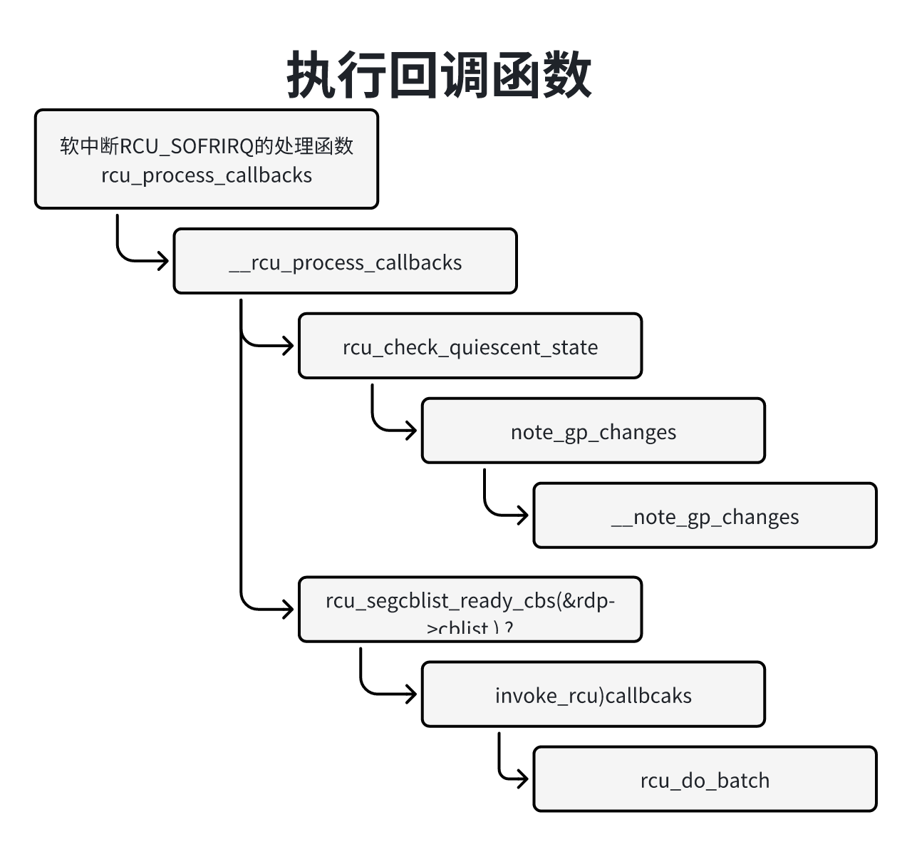
1、调用函数__note_gp_changes比较本处理器的rcu_data实力的已结束宽限期编号和叶子节点的已结束宽限期编号，分情况处理。
2、如果子链表RCU_DONE_TAIL不是空的，那么调用函数rcu_do_batch执行回调函数。
如下图所示，函数__note_gp_changes比较本处理器的rcu_data实例的已结束宽限期编号和叶子节点的已结束宽限期编号，分情况处理：
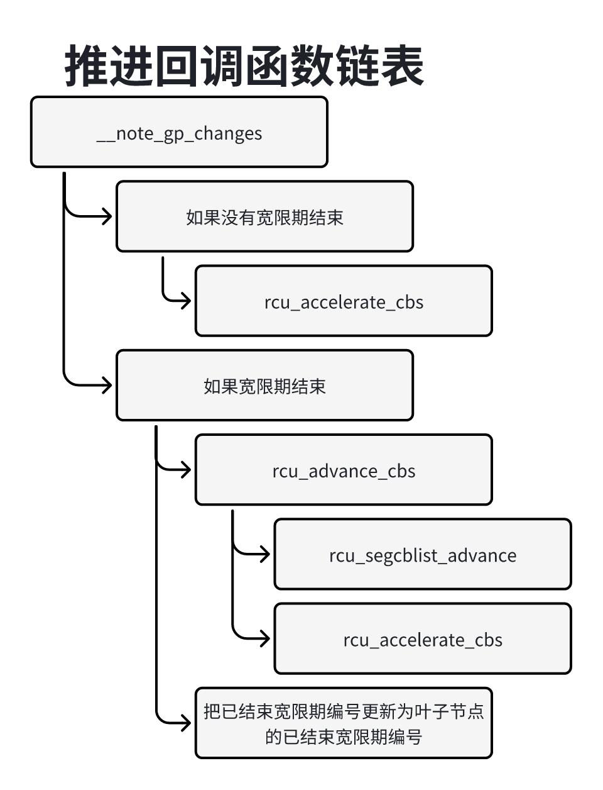
1、如果相等，说明没有宽限期，那么调用函数rcu_acclerate_cbs加速回调函数，把最后已给子链表RCU_NEXT_TAIL的回调函数移到前面的子链表中。
2、如果不等，说明宽限期结束，处理如下：
-> 调用函数rcu_advance_cbs推进回调函数链表：首先调用函数rcu_segcblist_advance，把已结束宽限期大的回调函数迁移到子链表RCU_DONE_TAIL中，然后调用函数rcu_acclerate_cbs加速回调函数，把最后一个子链表RCU_NEXT_TAIL的回调函数移到前面的子链表中。
-> 把rcu_data实例的已结束宽限期编号更新为叶子节点的已结束宽限期编号。
函数rcu_segblist_advance：负责处理子链表RCU_WAIT_TAIL和RCU_NEXTI_READY_TAIL如果子链表的宽限期是已结束宽限期，那么把回调函数移到子链表RCU_DONE_TAIL中，代码如下：
351// 位置：kernel/rcu/rcu_segcblist.c2
3// 参数seq：是已结束宽限期编号4void rcu_segcblist_advance(struct rcu_segcblist *rsclp, unsigned long seq)5{6 int i, j;7
8 WARN_ON_ONCE(!rcu_segcblist_is_enabled(rsclp));9 if (rcu_segcblist_restempty(rsclp, RCU_DONE_TAIL))10 return;11
12 // 依次处理子链表RCU_WAIT_TAIL和RCU_NEXT_READY_TAIL如果宽限期小于等于宽限期编号13 // 那么合并到子链表RCU_DONE_TAIL中14 for (i = RCU_WAIT_TAIL; i < RCU_NEXT_TAIL; i++) {15 if (ULONG_CMP_LT(seq, rsclp->gp_seq[i]))16 break;17 rsclp->tails[RCU_DONE_TAIL] = rsclp->tails[i];18 }19
20 if (i == RCU_WAIT_TAIL)21 return;22
23 // 把被合并的所有子链表的尾部指向子链表RCU_DONE_TAIL新的尾部24 for (j = RCU_WAIT_TAIL; j < i; j++)25 rsclp->tails[j] = rsclp->tails[RCU_DONE_TAIL];26
27 // 如果子链表RCU_WAIT_TAIL被合并，但是子链表RCU_NEXT_READY_TAIL没有被合并，那么子链表RCU_NEXT_READY_TAIL28 // 的所有回调函数移到子链表RCU_WAIT_TAIL中，子链表RCU_NEXT_READY_TAIL变为空29 for (j = RCU_WAIT_TAIL; i < RCU_NEXT_TAIL; i++, j++) {30 if (rsclp->tails[j] == rsclp->tails[RCU_NEXT_TAIL])31 break; 32 rsclp->tails[j] = rsclp->tails[i];33 rsclp->gp_seq[j] = rsclp->gp_seq[i];34 }35}函数rcu_acclerate_cbs：负责加速回调函数，把最后一个子链表RCU_NEXT_TAIL的回调函数移到前面的子链表中，代码如下：
241// 位置：kernel/rcu/tree.c2
3static bool rcu_accelerate_cbs(struct rcu_state *rsp, struct rcu_node *rnp,4 struct rcu_data *rdp)5{6 bool ret = false;7
8 // 如果后面3个子链表都是空的那么返回9 if (!rcu_segcblist_pend_cbs(&rdp->cblist))10 return false;11
12 // 调用函数rcu_segcblist_acclerate尝试把最后一个子链表RCU_NEXT_TAIL的回调函数移到前面的子链表中13 // 函数rcu_cbs_compeleted用来获取下一个宽限期编号14 if (rcu_segcblist_accelerate(&rdp->cblist, rcu_cbs_completed(rsp, rnp)))15 // 如果把最后一个子链表RCU_NEXT_TAIL的回调函数移到前面的子链表中，那么调用函数rcu_start_future_gp16 // 启动未来的宽限期17 ret = rcu_start_future_gp(rnp, rdp, NULL);18
19 if (rcu_segcblist_restempty(&rdp->cblist, RCU_WAIT_TAIL))20 trace_rcu_grace_period(rsp->name, rdp->gpnum, TPS("AccWaitCB"));21 else22 trace_rcu_grace_period(rsp->name, rdp->gpnum, TPS("AccReadyCB"));23 return ret;24}函数rcu_cbs_completed用来获取当前宽限期的下一宽限期编号，代码如下：
131// 位置：kernel/rcu/tree.c2
3static unsigned long rcu_cbs_completed(struct rcu_state *rsp,4 struct rcu_node *rnp)5{6
7 // 如果RCU树只有一层，并且没有启动新的宽限期，那么返回 已结束宽限期编号 + 18 if (rcu_get_root(rsp) == rnp && rnp->gpnum == rnp->completed)9 return rnp->completed + 1;10
11 // 其他情况返回 已结束宽限期编号 + 212 return rnp->completed + 2;13}函数rcu_segcblist_acclerate尝试把最后一个子链表RCU_NEXT_TAIL的回调函数到前面的子链表中，代码如下：
281// 位置：kernel/rcu/rcu_segcblist.c2
3// 参数：seq是下一个宽限期编号4bool rcu_segcblist_accelerate(struct rcu_segcblist *rsclp, unsigned long seq)5{6 int i;7
8 WARN_ON_ONCE(!rcu_segcblist_is_enabled(rsclp));9 if (rcu_segcblist_restempty(rsclp, RCU_DONE_TAIL))10 return false;11
12 // 从子链表RCU_NEXT_READY_TAIL开始往前面查找，找到最后一个满足条件“链表为空或者宽限期大于等于seq”13 // 的子链表14 for (i = RCU_NEXT_READY_TAIL; i > RCU_DONE_TAIL; i--)15 if (rsclp->tails[i] != rsclp->tails[i - 1] &&16 ULONG_CMP_LT(rsclp->gp_seq[i], seq))17 break;18
19 if (++i >= RCU_NEXT_TAIL)20 return false;21
22 // 把后面的所有子链表合并到这个子链表中，把子链表的宽限期编号更新为seq23 for (; i < RCU_NEXT_TAIL; i++) {24 rsclp->tails[i] = rsclp->tails[RCU_NEXT_TAIL];25 rsclp->gp_seq[i] = seq;26 }27 return true;28}如果子链表RCU_NEXT_READY_TAIL为空或者宽限期编号大于等于seq，那么把子链表RCU_NEXT_TAIL合并到子链表RCU_NEXT_TEADR_TAIL中，并且把宽限期编号更新为seq。
如果子链表RCU_WAIT_TAIL为空或者宽限期编号大于等于seq那么最后两个字链表合并到子链表RCU_WAIT_TAIL中，并且把宽限期编号更新为seq。
加速宽限期的原理是在所有的处理器上产生静止状态，使宽限期快速结束，加速宽限期减少了函数synchronize_rcu_expedited及其变体的等待时间，但是提高了处理器利用率增加了实体延迟和耗电。
以不可抢占RCU的函数synchronize_sched)expedited()为例说明，调用函数smp_call_function_single，在每个处理器上执行强制产生静止状态的函数sync_sched_exp_handler，函数smp_call_function_single根据情况进行处理：
1、如果目标处理器是本处理器，那么直接执行强制产生静止状态的函数sync_sched_exp_handler。
2、如果目标处理器是其他处理器，那么发送处理器中断请求到目标处理器，目标处理器在中断处理器程序里面执行强制产生静止状态的函数sync_sched_exp_handler。
函数sync_sched_exp_handler的代码如下：
291// 位置：kernel/rcu/tree_exp.h2
3static void sync_sched_exp_handler(void *data)4{5 struct rcu_data *rdp;6 struct rcu_node *rnp;7 struct rcu_state *rsp = data;8
9 rdp = this_cpu_ptr(rsp->rda);10 rnp = rdp->mynode;11 // 如果叶子节点的加速限期位图没有包含处理器，或者本处理器经历了加速静止状态，那么返回12 if (!(READ_ONCE(rnp->expmask) & rdp->grpmask) ||13 __this_cpu_read(rcu_sched_data.cpu_no_qs.b.exp))14 return;15 16 // 如果处理器正在执行空闲线程，那么报告加速静止状态17 if (rcu_is_cpu_rrupt_from_idle()) {18 rcu_report_exp_rdp(&rcu_sched_state,19 this_cpu_ptr(&rcu_sched_data), true);20 return;21 }22 23 // 把本处理器的rcu_sched_data实例的成员cpu_no_qs.b.exp初始化为true表示本处理器24 // 没有经历加速静止状态25 __this_cpu_write(rcu_sched_data.cpu_no_qs.b.exp, true);26 smp_store_release(this_cpu_ptr(&rcu_dynticks.rcu_urgent_qs), true);27 // 给当前处理器设置需要重新调度的标志位，强制产生静止状态28 resched_cpu(smp_processor_id());29}当进程准备返回用户模式时，发现设置了需要重新调度的标志位，进程调度器会调度进程，观察到静止状态，调用函数rcu_sched_qs记录静止状态：
211// 位置：kernel/rcu/tree.c2
3void rcu_sched_qs(void)4{5 if (!__this_cpu_read(rcu_sched_data.cpu_no_qs.s))6 return;7 trace_rcu_grace_period(TPS("rcu_sched"),8 __this_cpu_read(rcu_sched_data.gpnum),9 TPS("cpuqs"));10 11 // 记录本处理器经历了正常静止状态12 __this_cpu_write(rcu_sched_data.cpu_no_qs.b.norm, false);13 // 如果记录了加速静止状态，那么没必要重复记录14 if (!__this_cpu_read(rcu_sched_data.cpu_no_qs.b.exp))15 return;16 // 记录本处理器经历了加速静止状态17 __this_cpu_write(rcu_sched_data.cpu_no_qs.b.exp, false);18 // 报告加速静止状态19 rcu_report_exp_rdp(&rcu_sched_state,20 this_cpu_ptr(&rcu_sched_data), true);21}从代码上看：观察到正常静止状态没有立即报告，观察到加速静止状态，立即报告。